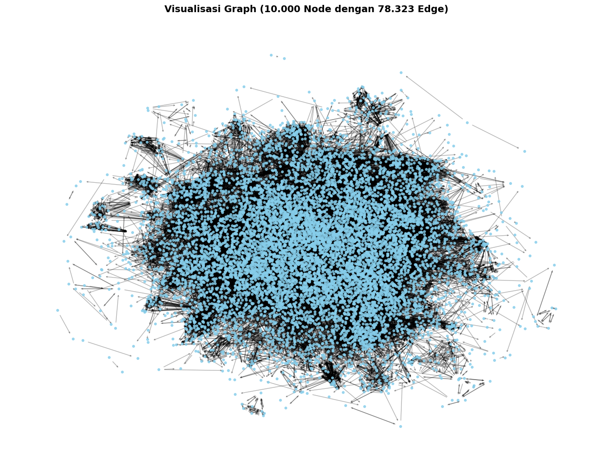
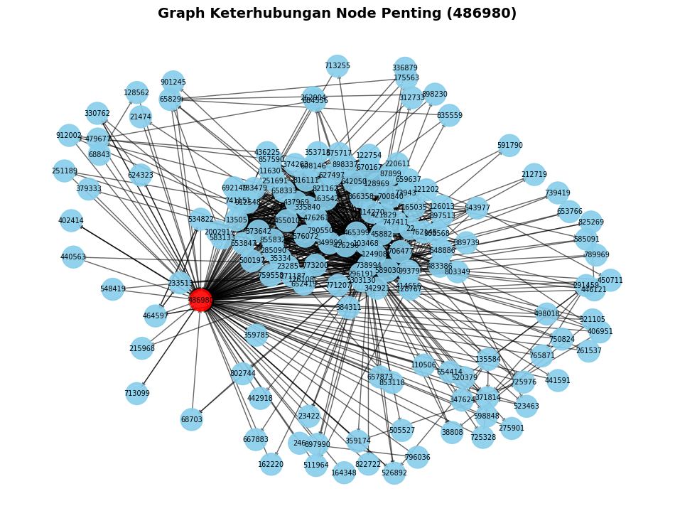

.jpg)
import pandas as pd
import numpy as np
import networkx as nx
import matplotlib.pyplot as plt
from IPython.display import display
1. Import Library#
dataset = '/content/drive/MyDrive/Tugas6PPW/web-Google_10k.txt'
2. Load Data#
data_node = pd.read_csv(
dataset,
sep='\t', # data dipisahkan oleh tab
comment='#', # abaikan baris yang diawali tanda #
names=['FromNodeId', 'ToNodeId'], # nama kolom
# header=0 # tidak ada header di baris pertama setelah komentar
)
---------------------------------------------------------------------------
FileNotFoundError Traceback (most recent call last)
Cell In[3], line 1
----> 1 data_node = pd.read_csv(
2 dataset,
3 sep='\t', # data dipisahkan oleh tab
4 comment='#', # abaikan baris yang diawali tanda #
5 names=['FromNodeId', 'ToNodeId'], # nama kolom
6 # header=0 # tidak ada header di baris pertama setelah komentar
7 )
File ~/.local/lib/python3.12/site-packages/pandas/io/parsers/readers.py:1026, in read_csv(filepath_or_buffer, sep, delimiter, header, names, index_col, usecols, dtype, engine, converters, true_values, false_values, skipinitialspace, skiprows, skipfooter, nrows, na_values, keep_default_na, na_filter, verbose, skip_blank_lines, parse_dates, infer_datetime_format, keep_date_col, date_parser, date_format, dayfirst, cache_dates, iterator, chunksize, compression, thousands, decimal, lineterminator, quotechar, quoting, doublequote, escapechar, comment, encoding, encoding_errors, dialect, on_bad_lines, delim_whitespace, low_memory, memory_map, float_precision, storage_options, dtype_backend)
1013 kwds_defaults = _refine_defaults_read(
1014 dialect,
1015 delimiter,
(...) 1022 dtype_backend=dtype_backend,
1023 )
1024 kwds.update(kwds_defaults)
-> 1026 return _read(filepath_or_buffer, kwds)
File ~/.local/lib/python3.12/site-packages/pandas/io/parsers/readers.py:620, in _read(filepath_or_buffer, kwds)
617 _validate_names(kwds.get("names", None))
619 # Create the parser.
--> 620 parser = TextFileReader(filepath_or_buffer, **kwds)
622 if chunksize or iterator:
623 return parser
File ~/.local/lib/python3.12/site-packages/pandas/io/parsers/readers.py:1620, in TextFileReader.__init__(self, f, engine, **kwds)
1617 self.options["has_index_names"] = kwds["has_index_names"]
1619 self.handles: IOHandles | None = None
-> 1620 self._engine = self._make_engine(f, self.engine)
File ~/.local/lib/python3.12/site-packages/pandas/io/parsers/readers.py:1880, in TextFileReader._make_engine(self, f, engine)
1878 if "b" not in mode:
1879 mode += "b"
-> 1880 self.handles = get_handle(
1881 f,
1882 mode,
1883 encoding=self.options.get("encoding", None),
1884 compression=self.options.get("compression", None),
1885 memory_map=self.options.get("memory_map", False),
1886 is_text=is_text,
1887 errors=self.options.get("encoding_errors", "strict"),
1888 storage_options=self.options.get("storage_options", None),
1889 )
1890 assert self.handles is not None
1891 f = self.handles.handle
File ~/.local/lib/python3.12/site-packages/pandas/io/common.py:873, in get_handle(path_or_buf, mode, encoding, compression, memory_map, is_text, errors, storage_options)
868 elif isinstance(handle, str):
869 # Check whether the filename is to be opened in binary mode.
870 # Binary mode does not support 'encoding' and 'newline'.
871 if ioargs.encoding and "b" not in ioargs.mode:
872 # Encoding
--> 873 handle = open(
874 handle,
875 ioargs.mode,
876 encoding=ioargs.encoding,
877 errors=errors,
878 newline="",
879 )
880 else:
881 # Binary mode
882 handle = open(handle, ioargs.mode)
FileNotFoundError: [Errno 2] No such file or directory: '/content/drive/MyDrive/Tugas6PPW/web-Google_10k.txt'
display(data_node)
| FromNodeId | ToNodeId | |
|---|---|---|
| 0 | 0 | 11342 |
| 1 | 0 | 824020 |
| 2 | 0 | 867923 |
| 3 | 0 | 891835 |
| 4 | 11342 | 0 |
| ... | ... | ... |
| 78318 | 495600 | 271199 |
| 78319 | 495600 | 407927 |
| 78320 | 495600 | 555924 |
| 78321 | 495600 | 628974 |
| 78322 | 495600 | 905532 |
78323 rows × 2 columns
3. Membangun Graph Menggunakan NetworkX#
graph = nx.DiGraph()
edge = list(zip(data_node['FromNodeId'], data_node['ToNodeId']))
graph.add_edges_from(edge)
print(f"Jumlah node : {graph.number_of_nodes()}")
print(f"Jumlah edge : {graph.number_of_edges()}")
Jumlah node : 10000
Jumlah edge : 78323
# Visualisasi Graph
plt.figure(figsize=(16, 12))
plt.title("Visualisasi Graph (10.000 Node dengan 78.323 Edge)", fontsize=14, fontweight='bold')
# layout efisien untuk dataset besar
pos = nx.spring_layout(graph, seed=42, k=0.15, iterations=20)
# gambar node dan edge
nx.draw_networkx_nodes(graph, pos, node_color='skyblue', node_size=10, alpha=0.8)
# nx.draw_networkx_edges(graph, pos, edge_color='black', arrows=False, alpha=0.3)
nx.draw_networkx_edges(graph, pos, edge_color='black', arrowstyle='->', arrowsize=4, alpha=0.3)
# label, bisa ditampilkan (resiko crash atau hang karena 10.000 node). aktifkan :
# nx.draw_networkx_labels(graph, pos, font_size=6, font_color='black')
plt.axis('off')
plt.show()

4. Membentuk Matriks Adjacency (A)#
# note: all matriks berukuran 10.000 x 10.000, sangat besar untuk ditampilkan
# jadi ditampilkan sebagian (misalnya 30x30)
node = list(graph.nodes())[:30]
A = nx.to_numpy_array(graph, nodelist=node, dtype=int)
data_node_A = pd.DataFrame(A, index=node, columns=node)
print("Matriks Adjacency (A) [30x30]:")
display(data_node_A)
Matriks Adjacency (A) [30x30]:
| 0 | 11342 | 824020 | 867923 | 891835 | 27469 | 38716 | 309564 | 322178 | 387543 | ... | 535748 | 695578 | 136593 | 414038 | 523684 | 760842 | 815602 | 846213 | 857527 | 112028 | |
|---|---|---|---|---|---|---|---|---|---|---|---|---|---|---|---|---|---|---|---|---|---|
| 0 | 0 | 1 | 1 | 1 | 1 | 0 | 0 | 0 | 0 | 0 | ... | 0 | 0 | 0 | 0 | 0 | 0 | 0 | 0 | 0 | 0 |
| 11342 | 1 | 0 | 0 | 1 | 1 | 1 | 1 | 1 | 1 | 1 | ... | 0 | 0 | 0 | 0 | 0 | 0 | 0 | 0 | 0 | 0 |
| 824020 | 1 | 0 | 0 | 1 | 1 | 0 | 0 | 0 | 1 | 1 | ... | 1 | 1 | 0 | 0 | 0 | 0 | 0 | 0 | 0 | 0 |
| 867923 | 1 | 1 | 0 | 0 | 1 | 0 | 0 | 0 | 0 | 0 | ... | 0 | 0 | 1 | 1 | 1 | 1 | 1 | 1 | 1 | 0 |
| 891835 | 1 | 1 | 0 | 1 | 0 | 0 | 0 | 0 | 0 | 0 | ... | 0 | 0 | 0 | 0 | 0 | 0 | 0 | 0 | 1 | 1 |
| 27469 | 0 | 0 | 0 | 0 | 0 | 0 | 0 | 0 | 0 | 0 | ... | 0 | 0 | 0 | 0 | 0 | 0 | 0 | 0 | 0 | 0 |
| 38716 | 1 | 1 | 0 | 1 | 1 | 0 | 0 | 0 | 1 | 1 | ... | 1 | 0 | 1 | 1 | 1 | 1 | 1 | 0 | 1 | 0 |
| 309564 | 0 | 1 | 0 | 1 | 1 | 1 | 1 | 0 | 0 | 0 | ... | 1 | 0 | 0 | 0 | 0 | 0 | 0 | 0 | 1 | 0 |
| 322178 | 1 | 1 | 0 | 1 | 1 | 0 | 0 | 0 | 0 | 0 | ... | 0 | 0 | 0 | 0 | 0 | 0 | 0 | 0 | 0 | 0 |
| 387543 | 1 | 1 | 0 | 1 | 1 | 0 | 1 | 0 | 0 | 0 | ... | 0 | 0 | 0 | 0 | 0 | 0 | 0 | 0 | 0 | 0 |
| 427436 | 0 | 0 | 0 | 0 | 0 | 0 | 0 | 0 | 0 | 0 | ... | 0 | 0 | 0 | 0 | 0 | 0 | 0 | 0 | 0 | 0 |
| 538214 | 0 | 0 | 0 | 0 | 0 | 0 | 0 | 0 | 0 | 0 | ... | 0 | 0 | 0 | 0 | 0 | 0 | 0 | 0 | 0 | 0 |
| 638706 | 1 | 1 | 0 | 1 | 1 | 0 | 0 | 0 | 0 | 0 | ... | 0 | 0 | 0 | 0 | 0 | 1 | 0 | 0 | 0 | 0 |
| 645018 | 1 | 1 | 0 | 1 | 1 | 0 | 0 | 1 | 0 | 0 | ... | 0 | 0 | 0 | 0 | 0 | 0 | 0 | 0 | 0 | 0 |
| 835220 | 1 | 1 | 0 | 1 | 1 | 0 | 0 | 0 | 0 | 0 | ... | 0 | 0 | 0 | 0 | 0 | 0 | 0 | 0 | 0 | 0 |
| 856657 | 1 | 1 | 0 | 1 | 1 | 0 | 0 | 0 | 0 | 0 | ... | 0 | 0 | 0 | 0 | 0 | 0 | 0 | 0 | 0 | 0 |
| 91807 | 1 | 0 | 0 | 1 | 1 | 0 | 1 | 0 | 1 | 1 | ... | 0 | 1 | 1 | 1 | 1 | 0 | 0 | 0 | 0 | 0 |
| 417728 | 0 | 0 | 0 | 0 | 0 | 0 | 0 | 0 | 0 | 0 | ... | 0 | 0 | 0 | 0 | 0 | 0 | 0 | 0 | 0 | 0 |
| 438493 | 0 | 0 | 0 | 0 | 0 | 0 | 0 | 0 | 0 | 0 | ... | 0 | 0 | 0 | 0 | 0 | 0 | 0 | 0 | 0 | 0 |
| 500627 | 1 | 1 | 0 | 1 | 1 | 0 | 0 | 0 | 0 | 0 | ... | 0 | 0 | 0 | 0 | 0 | 0 | 0 | 0 | 0 | 0 |
| 535748 | 1 | 1 | 0 | 1 | 1 | 0 | 0 | 0 | 0 | 0 | ... | 0 | 0 | 0 | 0 | 0 | 0 | 0 | 0 | 1 | 0 |
| 695578 | 1 | 0 | 0 | 1 | 1 | 0 | 1 | 0 | 1 | 1 | ... | 0 | 0 | 1 | 0 | 1 | 0 | 0 | 0 | 0 | 0 |
| 136593 | 1 | 1 | 0 | 1 | 1 | 1 | 1 | 0 | 0 | 0 | ... | 1 | 0 | 0 | 1 | 0 | 1 | 1 | 1 | 0 | 0 |
| 414038 | 1 | 1 | 0 | 1 | 1 | 0 | 0 | 0 | 0 | 0 | ... | 0 | 0 | 0 | 0 | 0 | 0 | 0 | 0 | 0 | 0 |
| 523684 | 1 | 1 | 0 | 1 | 1 | 0 | 1 | 0 | 0 | 0 | ... | 1 | 0 | 0 | 1 | 0 | 1 | 1 | 1 | 1 | 0 |
| 760842 | 1 | 1 | 0 | 1 | 1 | 0 | 0 | 0 | 0 | 0 | ... | 0 | 0 | 0 | 1 | 0 | 0 | 0 | 0 | 0 | 0 |
| 815602 | 1 | 1 | 0 | 1 | 1 | 0 | 0 | 0 | 0 | 0 | ... | 0 | 0 | 0 | 0 | 0 | 0 | 0 | 0 | 1 | 0 |
| 846213 | 1 | 1 | 0 | 1 | 1 | 0 | 1 | 0 | 0 | 0 | ... | 1 | 0 | 0 | 1 | 0 | 0 | 0 | 0 | 1 | 0 |
| 857527 | 1 | 1 | 0 | 1 | 0 | 1 | 1 | 0 | 0 | 0 | ... | 1 | 0 | 0 | 0 | 0 | 0 | 0 | 0 | 0 | 0 |
| 112028 | 0 | 0 | 0 | 0 | 0 | 0 | 0 | 0 | 0 | 0 | ... | 0 | 0 | 0 | 0 | 0 | 0 | 0 | 0 | 0 | 0 |
30 rows × 30 columns
5. Membentuk Matriks Probabilitas Transisi Baris-Stokastik (P)#
adj_full = nx.to_numpy_array(graph, dtype=float)
n = adj_full.shape[0]
# tangani dangling node (node tanpa outlink)
out_degree = adj_full.sum(axis=1)
for i in range(n):
if out_degree[i] == 0:
adj_full[i, :] = 1.0
# matriks transisi baris-stokastik
P = adj_full / adj_full.sum(axis=1, keepdims=True)
# tampilan sebagian matriks P
data_node_P = pd.DataFrame(P[:30, :30], columns=range(30), index=range(30))
print("Matriks Transisi (P) [30x30]:")
display(data_node_P)
Matriks Transisi (P) [30x30]:
| 0 | 1 | 2 | 3 | 4 | 5 | 6 | 7 | 8 | 9 | ... | 20 | 21 | 22 | 23 | 24 | 25 | 26 | 27 | 28 | 29 | |
|---|---|---|---|---|---|---|---|---|---|---|---|---|---|---|---|---|---|---|---|---|---|
| 0 | 0.000000 | 0.250000 | 0.2500 | 0.250000 | 0.250000 | 0.000000 | 0.000000 | 0.000000 | 0.000000 | 0.000000 | ... | 0.000000 | 0.000000 | 0.000000 | 0.000000 | 0.000000 | 0.000000 | 0.000000 | 0.000000 | 0.000000 | 0.0000 |
| 1 | 0.071429 | 0.000000 | 0.0000 | 0.071429 | 0.071429 | 0.071429 | 0.071429 | 0.071429 | 0.071429 | 0.071429 | ... | 0.000000 | 0.000000 | 0.000000 | 0.000000 | 0.000000 | 0.000000 | 0.000000 | 0.000000 | 0.000000 | 0.0000 |
| 2 | 0.090909 | 0.000000 | 0.0000 | 0.090909 | 0.090909 | 0.000000 | 0.000000 | 0.000000 | 0.090909 | 0.090909 | ... | 0.090909 | 0.090909 | 0.000000 | 0.000000 | 0.000000 | 0.000000 | 0.000000 | 0.000000 | 0.000000 | 0.0000 |
| 3 | 0.083333 | 0.083333 | 0.0000 | 0.000000 | 0.083333 | 0.000000 | 0.000000 | 0.000000 | 0.000000 | 0.000000 | ... | 0.000000 | 0.000000 | 0.083333 | 0.083333 | 0.083333 | 0.083333 | 0.083333 | 0.083333 | 0.083333 | 0.0000 |
| 4 | 0.100000 | 0.100000 | 0.0000 | 0.100000 | 0.000000 | 0.000000 | 0.000000 | 0.000000 | 0.000000 | 0.000000 | ... | 0.000000 | 0.000000 | 0.000000 | 0.000000 | 0.000000 | 0.000000 | 0.000000 | 0.000000 | 0.100000 | 0.1000 |
| 5 | 0.000000 | 0.000000 | 0.0000 | 0.000000 | 0.000000 | 0.000000 | 0.000000 | 0.000000 | 0.000000 | 0.000000 | ... | 0.000000 | 0.000000 | 0.000000 | 0.000000 | 0.000000 | 0.000000 | 0.000000 | 0.000000 | 0.000000 | 0.0000 |
| 6 | 0.058824 | 0.058824 | 0.0000 | 0.058824 | 0.058824 | 0.000000 | 0.000000 | 0.000000 | 0.058824 | 0.058824 | ... | 0.058824 | 0.000000 | 0.058824 | 0.058824 | 0.058824 | 0.058824 | 0.058824 | 0.000000 | 0.058824 | 0.0000 |
| 7 | 0.000000 | 0.090909 | 0.0000 | 0.090909 | 0.090909 | 0.090909 | 0.090909 | 0.000000 | 0.000000 | 0.000000 | ... | 0.090909 | 0.000000 | 0.000000 | 0.000000 | 0.000000 | 0.000000 | 0.000000 | 0.000000 | 0.090909 | 0.0000 |
| 8 | 0.250000 | 0.250000 | 0.0000 | 0.250000 | 0.250000 | 0.000000 | 0.000000 | 0.000000 | 0.000000 | 0.000000 | ... | 0.000000 | 0.000000 | 0.000000 | 0.000000 | 0.000000 | 0.000000 | 0.000000 | 0.000000 | 0.000000 | 0.0000 |
| 9 | 0.142857 | 0.142857 | 0.0000 | 0.142857 | 0.142857 | 0.000000 | 0.142857 | 0.000000 | 0.000000 | 0.000000 | ... | 0.000000 | 0.000000 | 0.000000 | 0.000000 | 0.000000 | 0.000000 | 0.000000 | 0.000000 | 0.000000 | 0.0000 |
| 10 | 0.000100 | 0.000100 | 0.0001 | 0.000100 | 0.000100 | 0.000100 | 0.000100 | 0.000100 | 0.000100 | 0.000100 | ... | 0.000100 | 0.000100 | 0.000100 | 0.000100 | 0.000100 | 0.000100 | 0.000100 | 0.000100 | 0.000100 | 0.0001 |
| 11 | 0.000000 | 0.000000 | 0.0000 | 0.000000 | 0.000000 | 0.000000 | 0.000000 | 0.000000 | 0.000000 | 0.000000 | ... | 0.000000 | 0.000000 | 0.000000 | 0.000000 | 0.000000 | 0.000000 | 0.000000 | 0.000000 | 0.000000 | 0.0000 |
| 12 | 0.200000 | 0.200000 | 0.0000 | 0.200000 | 0.200000 | 0.000000 | 0.000000 | 0.000000 | 0.000000 | 0.000000 | ... | 0.000000 | 0.000000 | 0.000000 | 0.000000 | 0.000000 | 0.200000 | 0.000000 | 0.000000 | 0.000000 | 0.0000 |
| 13 | 0.200000 | 0.200000 | 0.0000 | 0.200000 | 0.200000 | 0.000000 | 0.000000 | 0.200000 | 0.000000 | 0.000000 | ... | 0.000000 | 0.000000 | 0.000000 | 0.000000 | 0.000000 | 0.000000 | 0.000000 | 0.000000 | 0.000000 | 0.0000 |
| 14 | 0.250000 | 0.250000 | 0.0000 | 0.250000 | 0.250000 | 0.000000 | 0.000000 | 0.000000 | 0.000000 | 0.000000 | ... | 0.000000 | 0.000000 | 0.000000 | 0.000000 | 0.000000 | 0.000000 | 0.000000 | 0.000000 | 0.000000 | 0.0000 |
| 15 | 0.250000 | 0.250000 | 0.0000 | 0.250000 | 0.250000 | 0.000000 | 0.000000 | 0.000000 | 0.000000 | 0.000000 | ... | 0.000000 | 0.000000 | 0.000000 | 0.000000 | 0.000000 | 0.000000 | 0.000000 | 0.000000 | 0.000000 | 0.0000 |
| 16 | 0.066667 | 0.000000 | 0.0000 | 0.066667 | 0.066667 | 0.000000 | 0.066667 | 0.000000 | 0.066667 | 0.066667 | ... | 0.000000 | 0.066667 | 0.066667 | 0.066667 | 0.066667 | 0.000000 | 0.000000 | 0.000000 | 0.000000 | 0.0000 |
| 17 | 0.000100 | 0.000100 | 0.0001 | 0.000100 | 0.000100 | 0.000100 | 0.000100 | 0.000100 | 0.000100 | 0.000100 | ... | 0.000100 | 0.000100 | 0.000100 | 0.000100 | 0.000100 | 0.000100 | 0.000100 | 0.000100 | 0.000100 | 0.0001 |
| 18 | 0.000000 | 0.000000 | 0.0000 | 0.000000 | 0.000000 | 0.000000 | 0.000000 | 0.000000 | 0.000000 | 0.000000 | ... | 0.000000 | 0.000000 | 0.000000 | 0.000000 | 0.000000 | 0.000000 | 0.000000 | 0.000000 | 0.000000 | 0.0000 |
| 19 | 0.250000 | 0.250000 | 0.0000 | 0.250000 | 0.250000 | 0.000000 | 0.000000 | 0.000000 | 0.000000 | 0.000000 | ... | 0.000000 | 0.000000 | 0.000000 | 0.000000 | 0.000000 | 0.000000 | 0.000000 | 0.000000 | 0.000000 | 0.0000 |
| 20 | 0.200000 | 0.200000 | 0.0000 | 0.200000 | 0.200000 | 0.000000 | 0.000000 | 0.000000 | 0.000000 | 0.000000 | ... | 0.000000 | 0.000000 | 0.000000 | 0.000000 | 0.000000 | 0.000000 | 0.000000 | 0.000000 | 0.200000 | 0.0000 |
| 21 | 0.076923 | 0.000000 | 0.0000 | 0.076923 | 0.076923 | 0.000000 | 0.076923 | 0.000000 | 0.076923 | 0.076923 | ... | 0.000000 | 0.000000 | 0.076923 | 0.000000 | 0.076923 | 0.000000 | 0.000000 | 0.000000 | 0.000000 | 0.0000 |
| 22 | 0.083333 | 0.083333 | 0.0000 | 0.083333 | 0.083333 | 0.083333 | 0.083333 | 0.000000 | 0.000000 | 0.000000 | ... | 0.083333 | 0.000000 | 0.000000 | 0.083333 | 0.000000 | 0.083333 | 0.083333 | 0.083333 | 0.000000 | 0.0000 |
| 23 | 0.250000 | 0.250000 | 0.0000 | 0.250000 | 0.250000 | 0.000000 | 0.000000 | 0.000000 | 0.000000 | 0.000000 | ... | 0.000000 | 0.000000 | 0.000000 | 0.000000 | 0.000000 | 0.000000 | 0.000000 | 0.000000 | 0.000000 | 0.0000 |
| 24 | 0.083333 | 0.083333 | 0.0000 | 0.083333 | 0.083333 | 0.000000 | 0.083333 | 0.000000 | 0.000000 | 0.000000 | ... | 0.083333 | 0.000000 | 0.000000 | 0.083333 | 0.000000 | 0.083333 | 0.083333 | 0.083333 | 0.083333 | 0.0000 |
| 25 | 0.166667 | 0.166667 | 0.0000 | 0.166667 | 0.166667 | 0.000000 | 0.000000 | 0.000000 | 0.000000 | 0.000000 | ... | 0.000000 | 0.000000 | 0.000000 | 0.166667 | 0.000000 | 0.000000 | 0.000000 | 0.000000 | 0.000000 | 0.0000 |
| 26 | 0.200000 | 0.200000 | 0.0000 | 0.200000 | 0.200000 | 0.000000 | 0.000000 | 0.000000 | 0.000000 | 0.000000 | ... | 0.000000 | 0.000000 | 0.000000 | 0.000000 | 0.000000 | 0.000000 | 0.000000 | 0.000000 | 0.200000 | 0.0000 |
| 27 | 0.090909 | 0.090909 | 0.0000 | 0.090909 | 0.090909 | 0.000000 | 0.090909 | 0.000000 | 0.000000 | 0.000000 | ... | 0.090909 | 0.000000 | 0.000000 | 0.090909 | 0.000000 | 0.000000 | 0.000000 | 0.000000 | 0.090909 | 0.0000 |
| 28 | 0.111111 | 0.111111 | 0.0000 | 0.111111 | 0.000000 | 0.111111 | 0.111111 | 0.000000 | 0.000000 | 0.000000 | ... | 0.111111 | 0.000000 | 0.000000 | 0.000000 | 0.000000 | 0.000000 | 0.000000 | 0.000000 | 0.000000 | 0.0000 |
| 29 | 0.000100 | 0.000100 | 0.0001 | 0.000100 | 0.000100 | 0.000100 | 0.000100 | 0.000100 | 0.000100 | 0.000100 | ... | 0.000100 | 0.000100 | 0.000100 | 0.000100 | 0.000100 | 0.000100 | 0.000100 | 0.000100 | 0.000100 | 0.0001 |
30 rows × 30 columns
6. Membentuk Matriks Kolom-Stokastik (M)#
# M = Pᵀ (kolom-stokastik)
M = P.T
data_node_M = pd.DataFrame(M[:30, :30], columns=range(30), index=range(30))
print("Matriks M = Pᵀ [30x30]:")
display(data_node_M)
Matriks M = Pᵀ [30x30]:
| 0 | 1 | 2 | 3 | 4 | 5 | 6 | 7 | 8 | 9 | ... | 20 | 21 | 22 | 23 | 24 | 25 | 26 | 27 | 28 | 29 | |
|---|---|---|---|---|---|---|---|---|---|---|---|---|---|---|---|---|---|---|---|---|---|
| 0 | 0.00 | 0.071429 | 0.090909 | 0.083333 | 0.1 | 0.0 | 0.058824 | 0.000000 | 0.25 | 0.142857 | ... | 0.2 | 0.076923 | 0.083333 | 0.25 | 0.083333 | 0.166667 | 0.2 | 0.090909 | 0.111111 | 0.0001 |
| 1 | 0.25 | 0.000000 | 0.000000 | 0.083333 | 0.1 | 0.0 | 0.058824 | 0.090909 | 0.25 | 0.142857 | ... | 0.2 | 0.000000 | 0.083333 | 0.25 | 0.083333 | 0.166667 | 0.2 | 0.090909 | 0.111111 | 0.0001 |
| 2 | 0.25 | 0.000000 | 0.000000 | 0.000000 | 0.0 | 0.0 | 0.000000 | 0.000000 | 0.00 | 0.000000 | ... | 0.0 | 0.000000 | 0.000000 | 0.00 | 0.000000 | 0.000000 | 0.0 | 0.000000 | 0.000000 | 0.0001 |
| 3 | 0.25 | 0.071429 | 0.090909 | 0.000000 | 0.1 | 0.0 | 0.058824 | 0.090909 | 0.25 | 0.142857 | ... | 0.2 | 0.076923 | 0.083333 | 0.25 | 0.083333 | 0.166667 | 0.2 | 0.090909 | 0.111111 | 0.0001 |
| 4 | 0.25 | 0.071429 | 0.090909 | 0.083333 | 0.0 | 0.0 | 0.058824 | 0.090909 | 0.25 | 0.142857 | ... | 0.2 | 0.076923 | 0.083333 | 0.25 | 0.083333 | 0.166667 | 0.2 | 0.090909 | 0.000000 | 0.0001 |
| 5 | 0.00 | 0.071429 | 0.000000 | 0.000000 | 0.0 | 0.0 | 0.000000 | 0.090909 | 0.00 | 0.000000 | ... | 0.0 | 0.000000 | 0.083333 | 0.00 | 0.000000 | 0.000000 | 0.0 | 0.000000 | 0.111111 | 0.0001 |
| 6 | 0.00 | 0.071429 | 0.000000 | 0.000000 | 0.0 | 0.0 | 0.000000 | 0.090909 | 0.00 | 0.142857 | ... | 0.0 | 0.076923 | 0.083333 | 0.00 | 0.083333 | 0.000000 | 0.0 | 0.090909 | 0.111111 | 0.0001 |
| 7 | 0.00 | 0.071429 | 0.000000 | 0.000000 | 0.0 | 0.0 | 0.000000 | 0.000000 | 0.00 | 0.000000 | ... | 0.0 | 0.000000 | 0.000000 | 0.00 | 0.000000 | 0.000000 | 0.0 | 0.000000 | 0.000000 | 0.0001 |
| 8 | 0.00 | 0.071429 | 0.090909 | 0.000000 | 0.0 | 0.0 | 0.058824 | 0.000000 | 0.00 | 0.000000 | ... | 0.0 | 0.076923 | 0.000000 | 0.00 | 0.000000 | 0.000000 | 0.0 | 0.000000 | 0.000000 | 0.0001 |
| 9 | 0.00 | 0.071429 | 0.090909 | 0.000000 | 0.0 | 0.0 | 0.058824 | 0.000000 | 0.00 | 0.000000 | ... | 0.0 | 0.076923 | 0.000000 | 0.00 | 0.000000 | 0.000000 | 0.0 | 0.000000 | 0.000000 | 0.0001 |
| 10 | 0.00 | 0.071429 | 0.000000 | 0.000000 | 0.0 | 0.0 | 0.000000 | 0.090909 | 0.00 | 0.000000 | ... | 0.0 | 0.000000 | 0.000000 | 0.00 | 0.000000 | 0.000000 | 0.0 | 0.000000 | 0.000000 | 0.0001 |
| 11 | 0.00 | 0.071429 | 0.000000 | 0.000000 | 0.0 | 0.0 | 0.000000 | 0.090909 | 0.00 | 0.000000 | ... | 0.0 | 0.000000 | 0.000000 | 0.00 | 0.000000 | 0.000000 | 0.0 | 0.000000 | 0.000000 | 0.0001 |
| 12 | 0.00 | 0.071429 | 0.000000 | 0.000000 | 0.0 | 0.0 | 0.000000 | 0.000000 | 0.00 | 0.142857 | ... | 0.0 | 0.000000 | 0.000000 | 0.00 | 0.000000 | 0.000000 | 0.0 | 0.000000 | 0.000000 | 0.0001 |
| 13 | 0.00 | 0.071429 | 0.000000 | 0.000000 | 0.0 | 0.0 | 0.058824 | 0.000000 | 0.00 | 0.000000 | ... | 0.0 | 0.000000 | 0.000000 | 0.00 | 0.000000 | 0.000000 | 0.0 | 0.000000 | 0.000000 | 0.0001 |
| 14 | 0.00 | 0.071429 | 0.000000 | 0.083333 | 0.0 | 0.0 | 0.058824 | 0.000000 | 0.00 | 0.000000 | ... | 0.0 | 0.000000 | 0.083333 | 0.00 | 0.083333 | 0.166667 | 0.0 | 0.090909 | 0.000000 | 0.0001 |
| 15 | 0.00 | 0.071429 | 0.000000 | 0.000000 | 0.0 | 0.0 | 0.058824 | 0.000000 | 0.00 | 0.142857 | ... | 0.0 | 0.076923 | 0.000000 | 0.00 | 0.000000 | 0.000000 | 0.0 | 0.000000 | 0.000000 | 0.0001 |
| 16 | 0.00 | 0.000000 | 0.090909 | 0.000000 | 0.0 | 0.0 | 0.000000 | 0.000000 | 0.00 | 0.000000 | ... | 0.0 | 0.076923 | 0.000000 | 0.00 | 0.000000 | 0.000000 | 0.0 | 0.000000 | 0.000000 | 0.0001 |
| 17 | 0.00 | 0.000000 | 0.090909 | 0.000000 | 0.1 | 1.0 | 0.000000 | 0.090909 | 0.00 | 0.000000 | ... | 0.0 | 0.076923 | 0.000000 | 0.00 | 0.000000 | 0.000000 | 0.0 | 0.000000 | 0.111111 | 0.0001 |
| 18 | 0.00 | 0.000000 | 0.090909 | 0.000000 | 0.0 | 0.0 | 0.000000 | 0.090909 | 0.00 | 0.000000 | ... | 0.0 | 0.076923 | 0.000000 | 0.00 | 0.000000 | 0.000000 | 0.0 | 0.090909 | 0.111111 | 0.0001 |
| 19 | 0.00 | 0.000000 | 0.090909 | 0.083333 | 0.0 | 0.0 | 0.058824 | 0.000000 | 0.00 | 0.000000 | ... | 0.0 | 0.076923 | 0.000000 | 0.00 | 0.000000 | 0.000000 | 0.0 | 0.090909 | 0.111111 | 0.0001 |
| 20 | 0.00 | 0.000000 | 0.090909 | 0.000000 | 0.0 | 0.0 | 0.058824 | 0.090909 | 0.00 | 0.000000 | ... | 0.0 | 0.000000 | 0.083333 | 0.00 | 0.083333 | 0.000000 | 0.0 | 0.090909 | 0.111111 | 0.0001 |
| 21 | 0.00 | 0.000000 | 0.090909 | 0.000000 | 0.0 | 0.0 | 0.000000 | 0.000000 | 0.00 | 0.000000 | ... | 0.0 | 0.000000 | 0.000000 | 0.00 | 0.000000 | 0.000000 | 0.0 | 0.000000 | 0.000000 | 0.0001 |
| 22 | 0.00 | 0.000000 | 0.000000 | 0.083333 | 0.0 | 0.0 | 0.058824 | 0.000000 | 0.00 | 0.000000 | ... | 0.0 | 0.076923 | 0.000000 | 0.00 | 0.000000 | 0.000000 | 0.0 | 0.000000 | 0.000000 | 0.0001 |
| 23 | 0.00 | 0.000000 | 0.000000 | 0.083333 | 0.0 | 0.0 | 0.058824 | 0.000000 | 0.00 | 0.000000 | ... | 0.0 | 0.000000 | 0.083333 | 0.00 | 0.083333 | 0.166667 | 0.0 | 0.090909 | 0.000000 | 0.0001 |
| 24 | 0.00 | 0.000000 | 0.000000 | 0.083333 | 0.0 | 0.0 | 0.058824 | 0.000000 | 0.00 | 0.000000 | ... | 0.0 | 0.076923 | 0.000000 | 0.00 | 0.000000 | 0.000000 | 0.0 | 0.000000 | 0.000000 | 0.0001 |
| 25 | 0.00 | 0.000000 | 0.000000 | 0.083333 | 0.0 | 0.0 | 0.058824 | 0.000000 | 0.00 | 0.000000 | ... | 0.0 | 0.000000 | 0.083333 | 0.00 | 0.083333 | 0.000000 | 0.0 | 0.000000 | 0.000000 | 0.0001 |
| 26 | 0.00 | 0.000000 | 0.000000 | 0.083333 | 0.0 | 0.0 | 0.058824 | 0.000000 | 0.00 | 0.000000 | ... | 0.0 | 0.000000 | 0.083333 | 0.00 | 0.083333 | 0.000000 | 0.0 | 0.000000 | 0.000000 | 0.0001 |
| 27 | 0.00 | 0.000000 | 0.000000 | 0.083333 | 0.0 | 0.0 | 0.000000 | 0.000000 | 0.00 | 0.000000 | ... | 0.0 | 0.000000 | 0.083333 | 0.00 | 0.083333 | 0.000000 | 0.0 | 0.000000 | 0.000000 | 0.0001 |
| 28 | 0.00 | 0.000000 | 0.000000 | 0.083333 | 0.1 | 0.0 | 0.058824 | 0.090909 | 0.00 | 0.000000 | ... | 0.2 | 0.000000 | 0.000000 | 0.00 | 0.083333 | 0.000000 | 0.2 | 0.090909 | 0.000000 | 0.0001 |
| 29 | 0.00 | 0.000000 | 0.000000 | 0.000000 | 0.1 | 0.0 | 0.000000 | 0.000000 | 0.00 | 0.000000 | ... | 0.0 | 0.000000 | 0.000000 | 0.00 | 0.000000 | 0.000000 | 0.0 | 0.000000 | 0.000000 | 0.0001 |
30 rows × 30 columns
7. Menghitung PageRank Iteratif (Manual)#
def pagerank_iteratif(M, nodelist, d=0.85, max_iter=100, tol=1e-6):
n = M.shape[0]
r = np.ones(n) / n
teleport = (1 - d) / n
for i in range(max_iter):
r_new = d * M @ r + teleport
# debugging aja
indeks_top_node = np.argmax(r_new) # indeks node dengan PageRank tertinggi
top_node = nodelist[indeks_top_node] # node dengan score pagerank tertinggi
print(f"Iterasi {i+1}: Node {top_node} dengan PageRank {r_new[indeks_top_node]:.6f}")
if np.linalg.norm(r_new - r, 1) < tol:
# debugging aja
print(f"Konvergen setelah {i+1} iterasi")
break
r = r_new
return r
print("Menghitung PageRank (butuh waktu karena 10.000 node):")
urutan_node = list(graph.nodes())
r = pagerank_iteratif(M, nodelist=urutan_node, d=0.85, max_iter=100, tol=1e-6)
Menghitung PageRank (butuh waktu karena 10.000 node):
Iterasi 1: Node 151110 dengan PageRank 0.007679
Iterasi 2: Node 285814 dengan PageRank 0.003722
Iterasi 3: Node 486980 dengan PageRank 0.006135
Iterasi 4: Node 486980 dengan PageRank 0.004940
Iterasi 5: Node 486980 dengan PageRank 0.006267
Iterasi 6: Node 486980 dengan PageRank 0.005782
Iterasi 7: Node 486980 dengan PageRank 0.006423
Iterasi 8: Node 486980 dengan PageRank 0.006245
Iterasi 9: Node 486980 dengan PageRank 0.006567
Iterasi 10: Node 486980 dengan PageRank 0.006515
Iterasi 11: Node 486980 dengan PageRank 0.006684
Iterasi 12: Node 486980 dengan PageRank 0.006681
Iterasi 13: Node 486980 dengan PageRank 0.006773
Iterasi 14: Node 486980 dengan PageRank 0.006786
Iterasi 15: Node 486980 dengan PageRank 0.006839
Iterasi 16: Node 486980 dengan PageRank 0.006854
Iterasi 17: Node 486980 dengan PageRank 0.006886
Iterasi 18: Node 486980 dengan PageRank 0.006900
Iterasi 19: Node 486980 dengan PageRank 0.006920
Iterasi 20: Node 486980 dengan PageRank 0.006931
Iterasi 21: Node 486980 dengan PageRank 0.006943
Iterasi 22: Node 486980 dengan PageRank 0.006952
Iterasi 23: Node 486980 dengan PageRank 0.006960
Iterasi 24: Node 486980 dengan PageRank 0.006966
Iterasi 25: Node 486980 dengan PageRank 0.006972
Iterasi 26: Node 486980 dengan PageRank 0.006976
Iterasi 27: Node 486980 dengan PageRank 0.006980
Iterasi 28: Node 486980 dengan PageRank 0.006983
Iterasi 29: Node 486980 dengan PageRank 0.006986
Iterasi 30: Node 486980 dengan PageRank 0.006988
Iterasi 31: Node 486980 dengan PageRank 0.006990
Iterasi 32: Node 486980 dengan PageRank 0.006991
Iterasi 33: Node 486980 dengan PageRank 0.006992
Iterasi 34: Node 486980 dengan PageRank 0.006993
Iterasi 35: Node 486980 dengan PageRank 0.006994
Iterasi 36: Node 486980 dengan PageRank 0.006995
Iterasi 37: Node 486980 dengan PageRank 0.006996
Iterasi 38: Node 486980 dengan PageRank 0.006996
Iterasi 39: Node 486980 dengan PageRank 0.006997
Iterasi 40: Node 486980 dengan PageRank 0.006997
Iterasi 41: Node 486980 dengan PageRank 0.006997
Iterasi 42: Node 486980 dengan PageRank 0.006998
Iterasi 43: Node 486980 dengan PageRank 0.006998
Iterasi 44: Node 486980 dengan PageRank 0.006998
Iterasi 45: Node 486980 dengan PageRank 0.006998
Iterasi 46: Node 486980 dengan PageRank 0.006998
Iterasi 47: Node 486980 dengan PageRank 0.006998
Iterasi 48: Node 486980 dengan PageRank 0.006999
Iterasi 49: Node 486980 dengan PageRank 0.006999
Iterasi 50: Node 486980 dengan PageRank 0.006999
Iterasi 51: Node 486980 dengan PageRank 0.006999
Iterasi 52: Node 486980 dengan PageRank 0.006999
Iterasi 53: Node 486980 dengan PageRank 0.006999
Iterasi 54: Node 486980 dengan PageRank 0.006999
Iterasi 55: Node 486980 dengan PageRank 0.006999
Iterasi 56: Node 486980 dengan PageRank 0.006999
Iterasi 57: Node 486980 dengan PageRank 0.006999
Iterasi 58: Node 486980 dengan PageRank 0.006999
Iterasi 59: Node 486980 dengan PageRank 0.006999
Konvergen setelah 59 iterasi
8. Menampilkan dan Menyimpan Hasil PageRank#
1. Semua Node#
score_pagerank = pd.DataFrame({
'node': list(graph.nodes()),
'pagerank': r
})
# mengurutkan node dengan nilai PageRank tertinggi ke terendah
data_pagerank_node = score_pagerank.sort_values(by='pagerank', ascending=False).reset_index(drop=True)
print("Data Node dan Score PageRank:")
display(data_pagerank_node)
Data Node dan Score PageRank:
| node | pagerank | |
|---|---|---|
| 0 | 486980 | 0.006999 |
| 1 | 285814 | 0.004748 |
| 2 | 226374 | 0.003396 |
| 3 | 163075 | 0.003331 |
| 4 | 555924 | 0.002686 |
| ... | ... | ... |
| 9995 | 195 | 0.000021 |
| 9996 | 113 | 0.000021 |
| 9997 | 311 | 0.000021 |
| 9998 | 9 | 0.000021 |
| 9999 | 79 | 0.000021 |
10000 rows × 2 columns
data_pagerank_node.to_csv("PPW_Tugas6_WebGoogle10K_PageRank(Manual).csv", index=False)
2. 5 Node#
lima_node_penting = data_pagerank_node.head(5)
print("5 Node dengan Nilai PageRank Tertinggi:")
display(lima_node_penting)
5 Node dengan Nilai PageRank Tertinggi:
| node | pagerank | |
|---|---|---|
| 0 | 486980 | 0.006999 |
| 1 | 285814 | 0.004748 |
| 2 | 226374 | 0.003396 |
| 3 | 163075 | 0.003331 |
| 4 | 555924 | 0.002686 |
9. Perbandingan: Menghitung dan Menampilkan PageRank Menggunakan NetworkX#
1. Semua Node#
score_pagerank_networkx = nx.pagerank(graph, alpha=0.85)
data_pagerank_node_networkx = pd.DataFrame(list(score_pagerank_networkx.items()), columns=['node', 'pagerank'])
# node score pagerank tertinggi ke terendah
data_node_pagerank_networkx_urut = data_pagerank_node_networkx.sort_values(by='pagerank', ascending=False).reset_index(drop=True)
print("Perbandingan Menggunakan NetworkX - Data Node dan Score PageRank:")
display(data_node_pagerank_networkx_urut)
Perbandingan Menggunakan NetworkX - Data Node dan Score PageRank:
| node | pagerank | |
|---|---|---|
| 0 | 486980 | 0.006515 |
| 1 | 285814 | 0.004633 |
| 2 | 226374 | 0.003301 |
| 3 | 163075 | 0.003288 |
| 4 | 555924 | 0.002756 |
| ... | ... | ... |
| 9995 | 43 | 0.000021 |
| 9996 | 67 | 0.000021 |
| 9997 | 198 | 0.000021 |
| 9998 | 195 | 0.000021 |
| 9999 | 158 | 0.000021 |
10000 rows × 2 columns
# OPSIONAL
# kalau mau simpan hasil data node dan score pagerank pembanding menggunakan NetworkX, aktifkan :
# data_node_pagerank_networkx_urut.to_csv("PPW_Tugas6_WebGoogle10K_PageRank(NetworkX).csv", index=False)
2. 5 Node#
lima_node_penting_networkx = data_node_pagerank_networkx_urut.head(5)
print("Perbandingan Menggunakan NetworkX - 5 Node dengan Nilai PageRank Tertinggi:")
display(lima_node_penting_networkx)
Perbandingan Menggunakan NetworkX - 5 Node dengan Nilai PageRank Tertinggi:
| node | pagerank | |
|---|---|---|
| 0 | 486980 | 0.006515 |
| 1 | 285814 | 0.004633 |
| 2 | 226374 | 0.003301 |
| 3 | 163075 | 0.003288 |
| 4 | 555924 | 0.002756 |
10. Visualisasi Hubungan Node Penting dengan Node Terhubung#
# simpan node dengan PageRank tertinggi ke variabel
node_penting = int(lima_node_penting.iloc[0]['node'])
print(f"Node dengan nilai PageRank tertinggi: {node_penting}")
# node yang terhubung dengan node penting (incoming dan outgoing)
neighbors_out = list(graph.successors(node_penting)) # node yang ditaut oleh node_penting
neighbors_in = list(graph.predecessors(node_penting)) # node yang menaut ke node_penting
# menggabungkan semua node yang relevan
node_terhubung = set(neighbors_out + neighbors_in + [node_penting])
# buat subgraph dari node-node tersebut
subgraph_node_terhubung = graph.subgraph(node_terhubung)
Node dengan nilai PageRank tertinggi: 486980
# Visualisasi Graph
plt.figure(figsize=(12, 9))
plt.title(f"Graph Keterhubungan Node Penting ({node_penting})", fontsize=14, fontweight='bold')
pos = nx.spring_layout(subgraph_node_terhubung, seed=42, k=0.3)
# warna berbeda untuk node penting
warna_node = ['red' if node == node_penting else 'skyblue' for node in subgraph_node_terhubung.nodes()]
nx.draw_networkx_nodes(subgraph_node_terhubung, pos, node_color=warna_node, node_size=500, alpha=0.9)
nx.draw_networkx_edges(subgraph_node_terhubung, pos, edge_color='black', arrowstyle='->', arrowsize=7, alpha=0.6)
nx.draw_networkx_labels(subgraph_node_terhubung, pos, font_size=7, font_color='black')
plt.axis('off')
plt.show()

# Data Keterhubungan Node Penting
print(f"Jumlah total node yang terhubung dengan {node_penting}: {len(node_terhubung)}")
# DataFrame untuk incoming dan outgoing edges
df_in = pd.DataFrame({
'FromNodeId': neighbors_in,
'ToNodeId': [node_penting] * len(neighbors_in)
})
df_out = pd.DataFrame({
'FromNodeId': [node_penting] * len(neighbors_out),
'ToNodeId': neighbors_out
})
# gabungkan kedua arah hubungan
data_node_terhubung = pd.concat([df_in, df_out], ignore_index=True)
print(f"Daftar Node yang Terhubung dengan Node {node_penting} (Incoming dan Outgoing):")
display(data_node_terhubung)
Jumlah total node yang terhubung dengan 486980: 156
Daftar Node yang Terhubung dengan Node 486980 (Incoming dan Outgoing):
| FromNodeId | ToNodeId | |
|---|---|---|
| 0 | 22 | 486980 |
| 1 | 13505 | 486980 |
| 2 | 87899 | 486980 |
| 3 | 99379 | 486980 |
| 4 | 124908 | 486980 |
| ... | ... | ... |
| 156 | 486980 | 359785 |
| 157 | 486980 | 402414 |
| 158 | 486980 | 526892 |
| 159 | 486980 | 624323 |
| 160 | 486980 | 713099 |
161 rows × 2 columns